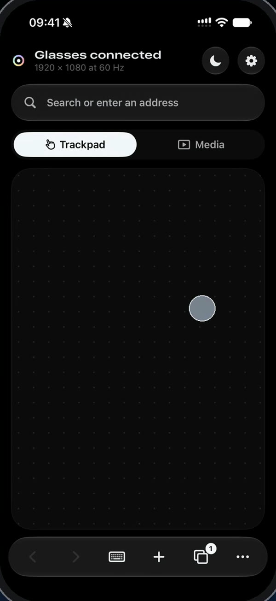
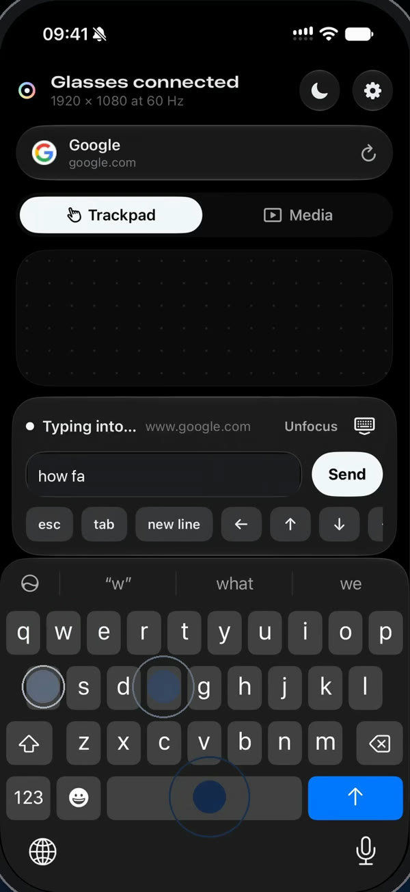
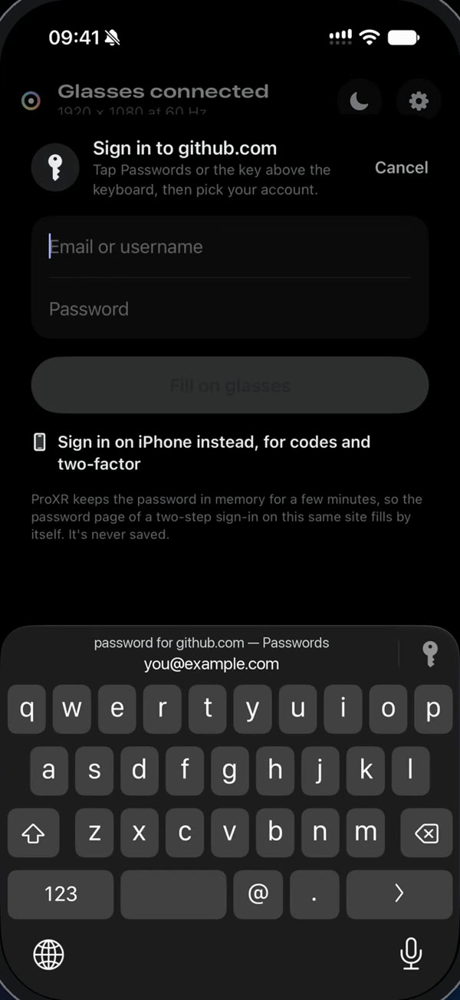
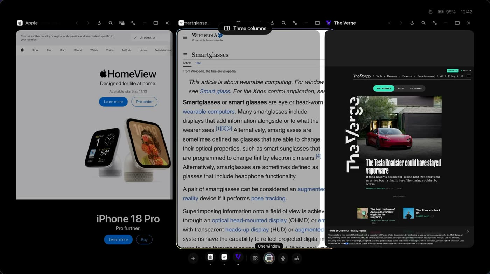
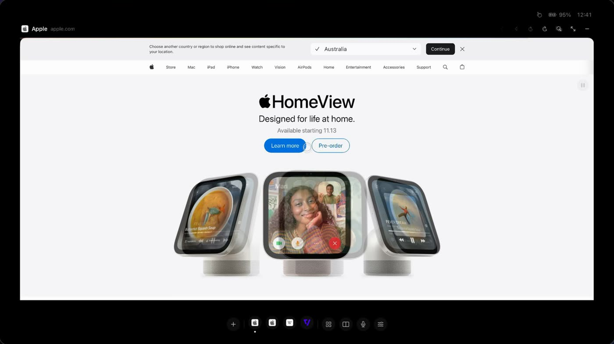
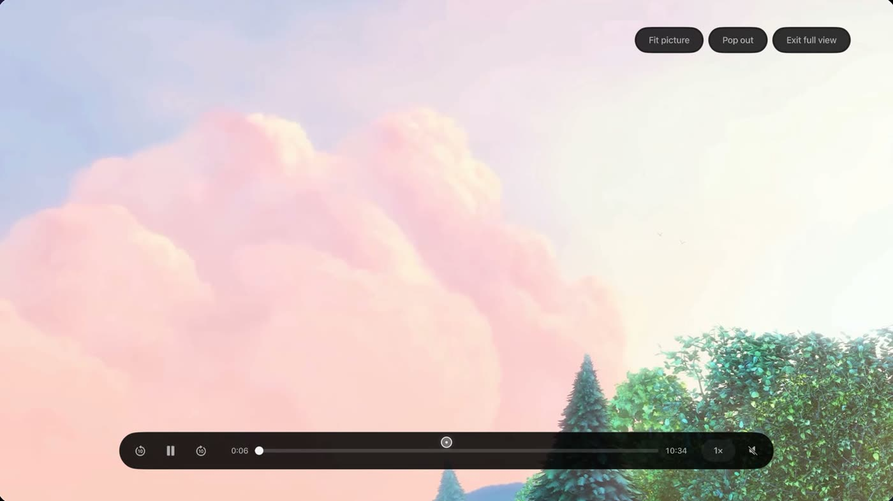
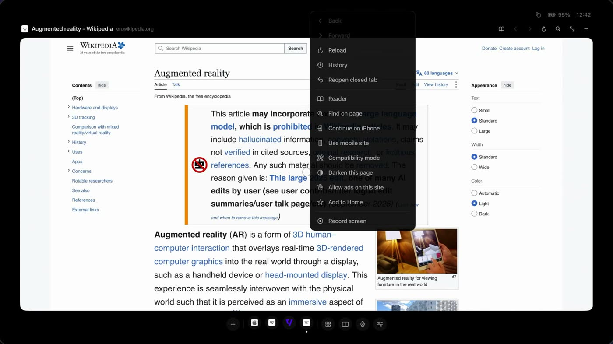
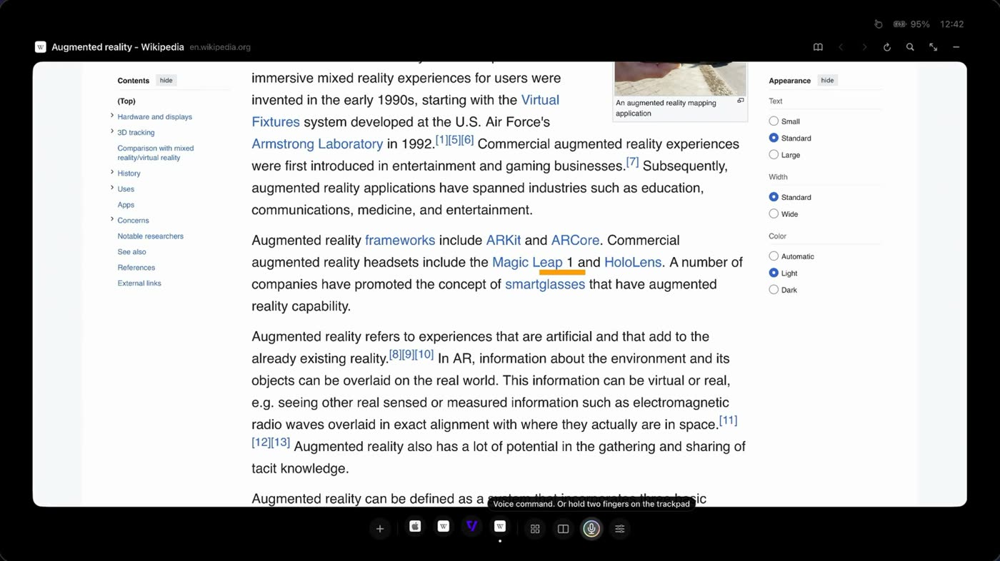
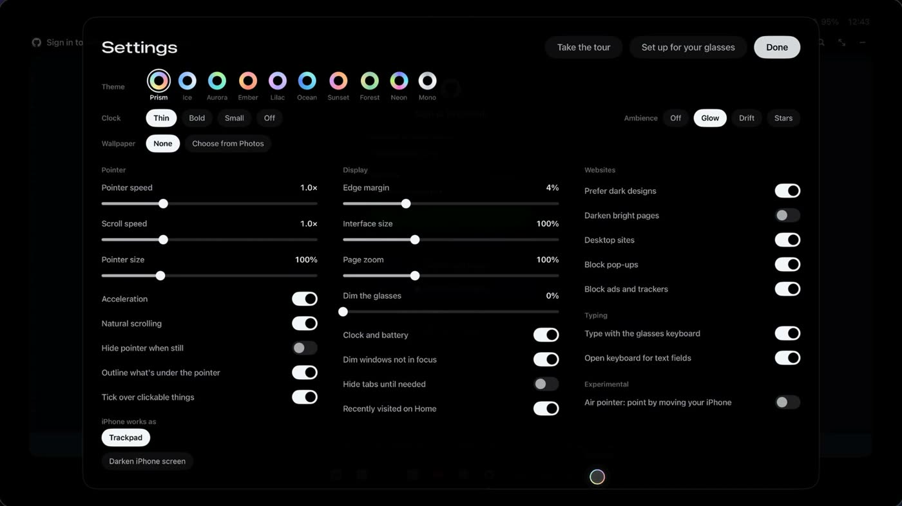

Your glasses, with a screen of their own.
ProXR stops your display glasses mirroring your iPhone and gives them a real workspace: full websites, video that floats, up to three windows side by side. Your iPhone becomes the trackpad, keyboard and remote.
Ninety seconds on the glasses.
Recorded from ProXR as it runs: what you see is what appears on your glasses.
Your iPhone is the controller.
You don't need a mouse, a keyboard or a stand. The iPhone in your hand moves the pointer, types and signs you in, and you hardly need to look at it.

A trackpad you can feel
Glide to move, tap to click, two fingers to scroll and pinch. Haptics tick as you pass over links and buttons.

Type with the keyboard you know
Autocorrect, dictation and every language your iPhone has. Or type right on the glasses without looking down.

Sign in with Passwords
Your passwords stay on your iPhone. Pick an account, confirm with Face ID, and the site on your glasses signs you in.
Made for the glasses, not shrunk from a phone.

Up to three windows side by side
Research in one, write in another, keep the news in a third. Drag the dividers to size them, minimise one to the dock, swipe up with three fingers to see every tab.

The real website, full size
Sites see a desktop, so you get the whole page, not the cut-down mobile one.

Video that floats
Watch full view, or pop a video out and keep it playing over whatever you're doing.

Read, find and darken
Reader for just the article, Find on the page, and a dark version of any bright site, easier on the eyes and the battery.

Say what you want
Hold two fingers on the trackpad and say "open YouTube" or "split view". Speech is understood on your iPhone.
Your photos, life-size
Your photos and videos on the big screen. They never leave your iPhone.

Set up for your eyes
A guided setup for your glasses, edge margins, interface size, ten light themes and your own wallpaper, all changed from the glasses.
Works with your display glasses.
- XREAL
- VITURE
- Rokid
- RayNeo
- TCL NXTWEAR
- and more
Glasses
Any display glasses that plug into an iPhone over USB-C. Monitors and TVs work too.
iPhone
An iPhone with USB-C (iPhone 15 or later), on iOS 17 or later.
Nothing else
No account and no extra app. Plug in, open ProXR, and the glasses are yours.
Free to try. Yours to keep.
Download ProXR for free and use every feature for 7 days. After that, browsing in one window stays free, and ProXR Pro is a single purchase. No subscription.
- Browsing in one window, with tabs
- Your iPhone as trackpad, keyboard and remote
- Sign in with Passwords
- Full view for video
- Reader, Find, voice and dark pages
- Everything in Free
- Up to three windows side by side
- Pop-out video over your pages
- Your photos and videos on the glasses
- Screen recording of your glasses in 1080p
Prices in US dollars; the App Store shows yours in your own currency. The 7-day trial starts when you choose to start it, and nothing is charged when it ends. Regular feature updates included.
Private by design.
ProXR has no account, no ads, no analytics and no tracking. Your history, sign-ins and settings are kept on your iPhone, and your photos never leave it.
Questions or ideas?
Write in for help, to report a problem, or to say what you'd like ProXR to do next. Every message is read.
ak2128@proton.me